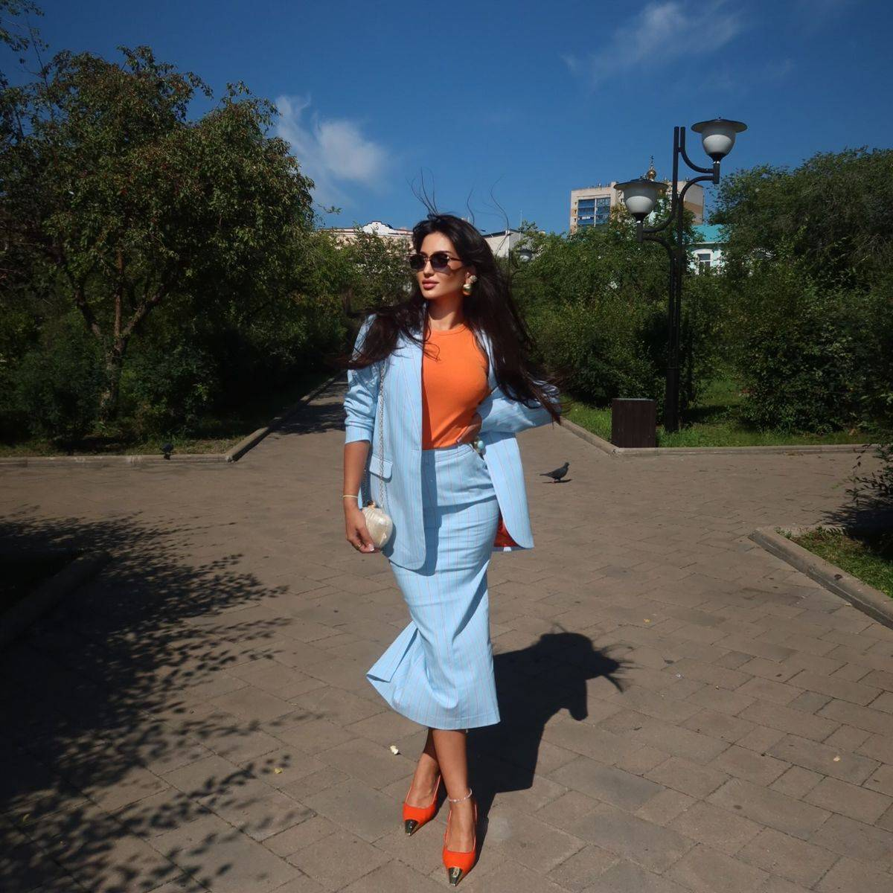
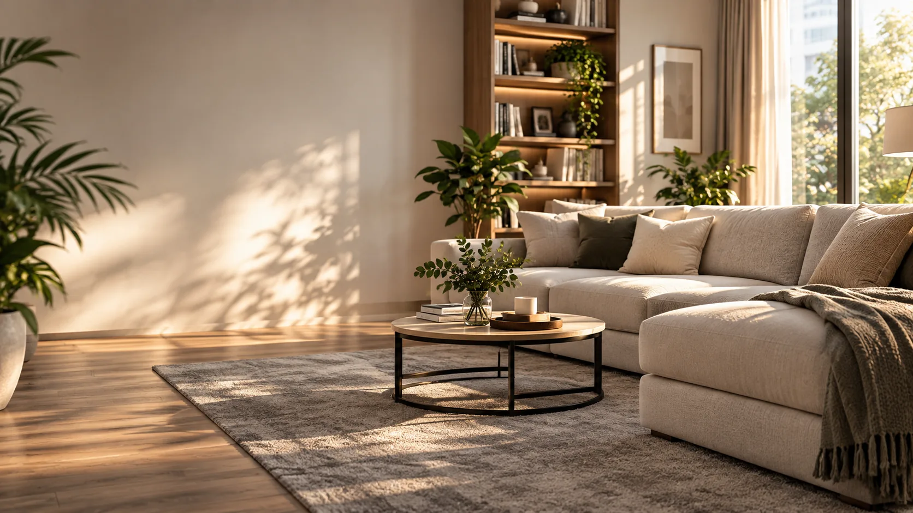

WHITEGLOW · ОБУЧЕНИЕОпыт
в дело.
в дело.
01 — ОБУЧЕНИЕ / КЛИНИНГ
WhiteGlow
Сайт курса Марии Манукян о профессиональном клининге: знакомство с экспертом, программа, форматы обучения и отзывы учеников.
Я Иван, работаю как LordPandocha. Придумываю и собираю сайты, которые хочется рассмотреть — и в которых легко найти главное.
Выясняю, что важно человеку. Из этого рождаются структура, визуальный язык и движение.
Два проекта, два разных характера. Посмотри сам.

Сайт курса Марии Манукян о профессиональном клининге: знакомство с экспертом, программа, форматы обучения и отзывы учеников.

Сайт сервиса чистки мебели в Нефтеюганске: понятные услуги, цены, фотографии работ и короткий путь к заявке.
Под именем LordPandocha я делаю дизайн и собираю сайты. Мне важно, чтобы сильный первый экран не скрывал слабую логику: человек должен быстро понять, куда попал и что делать дальше.
Здесь нет нарисованных кейсов — выше можно открыть оба проекта. А если хочешь обсудить свой, напиши мне напрямую.
Хочу, чтобы сайт впечатлял в первую секунду — и оставался понятным после неё.
Ты общаешься с человеком, который думает над страницей и собирает её. Без потери смысла между «придумали» и «сделали».
Я показываю работающие сайты, а не обещания. Открой WhiteGlow и ChistoDoma, посмотри детали и реши сам.
Анимация помогает заметить главное, понять переход и почувствовать характер проекта. Она не должна мешать читать или нажимать.
Что человеку важно узнать и какое действие должно быть простым.
Соединить структуру, типографику, фотографии и движение в цельный сайт.
Пройти путь посетителя на разных экранах и довести детали до конца.
Расскажи в двух словах, для кого сайт и что он должен помочь сделать. Отвечу лично.